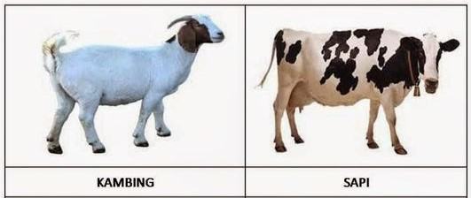
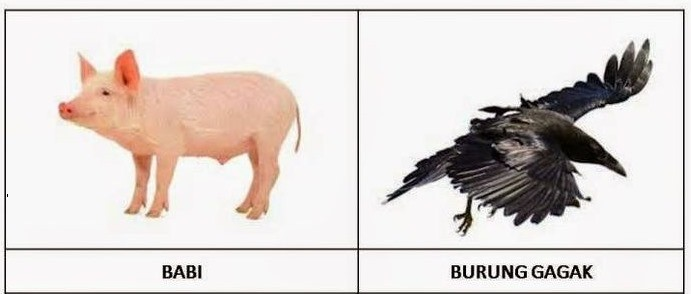
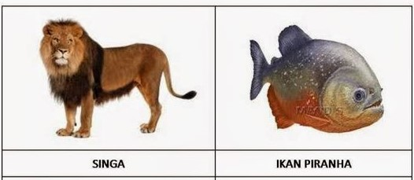

HEWAN HERBIVORA
Hewan Herbivora adalah jenis hewan pemakan tumbuhan. Hampir semua bagian tumbuhan bisa dimakannya. Seperti daun, akar, batang, bunga, buah, atau rumput. Hewan ini bisa dikenali dari susunan giginya. Seperti: tidak memiliki giri taring, giginya hanya gigi seri dan geraham untuk mengunyah.
HEWAN OMNIVORA
Hewan Omnivora adalah jenis hewan yang suka makan daging maupun tumbuhan atau dikenal juga dengan hewan pemakan segala. Sesuai dengan namanya, hewan ini bisa memangsa hewan lain untuk disantap dan makan tumbuh-tumbuhan juga.
HEWAN KARNIVORA
Hewan Karnivora adalah jenis hewan pemakan daging. Hewan yang masuk golongan karnivora ini, dikenal sebagai hewan buas. Itu karena mereka memangsa hewan lain untuk dimakan. Hewan ini dikenal juga sebagai hewan bisa bergerak sangat cepat, gigi taringnya tajam, kukunya juga runcing, pandangan matanya, serta penciumannya tajam.